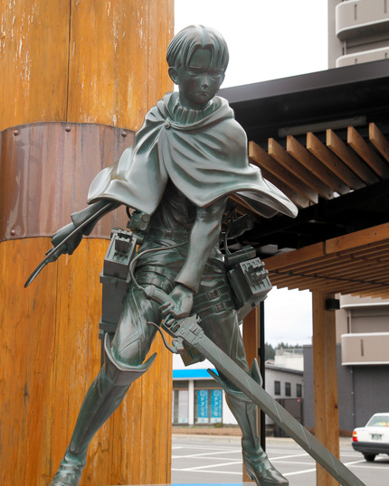

所在地とアクセス
大山ダム |
所在地: 〒877-0201 大分県日田市大山町西大山2008-1
URL: ダム情報 営業時間: 8:30～17:00 閉庁日: 土・日・祭日（下流広場は365日開放） 駐車場: 有ります(無料) アクセス:日田インターから車で21分、日田駅から車で20分 |
|---|---|
| リヴァイ兵長像  |
所在地: 〒877-0013 大分県日田市元町11-1
アクセス: 日田インターから車で10分、日田駅南広場内 |
進撃の巨人 in HITAミュージアム |
所在地: 〒877-0201 大分県日田市大山町西大山4106
駐車場: 有ります 入場料: 18歳以上 500円 (18未満は無料) 営業時間: 営業時間: 平日 9:30～16:00/土日祝日 9:30～17:00 不定休 日田インターから車で20分、日田駅から車で19分 |